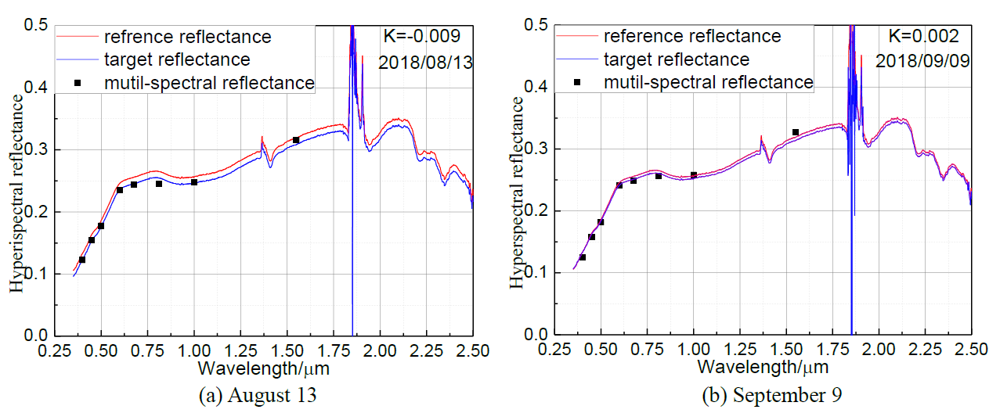

论文笔记-场地自动化定标方法研究及应用
论文笔记-场地自动化定标方法研究及应用
辐射定标的意义
卫星获取地物图像时候，由于存在各种各样的干扰，造成观测值与实际值的偏差，定标就是来（尽可能）消除这些偏差，使得卫星得到的图像与真实的物体之间（尽可能）没有这些偏差，即反映客观事物。
辐射定标
辐射校正
遥感辐射定标方法
因为卫星所在环境为外太空，会受到强烈的电磁干扰和强辐射，所以器件的老化程度是很快的，这也就是卫星存在使用寿命的一个原因，受限于载荷的使用寿命。那么要延长载荷的工作年限，就需要实时测出其老化程度，对于传感器的灵敏度做出评估，改变具体参数使得其能够继续工作。比如之前对于输入为 10 就能输出 10 ，现在只能输出 5，就乘以系数 2 就可以完成跟之前一样的功能。这样器件就还可以接着使用。
发射前定标（准备活动）
相当于发射前，在地面上对各个参数进行测定，比如输入 10 输出 10 ，那这个系数就是 1，在发射前就需要记录下来。也就是相当于确定了一个基准，来为后面的调整参数做准备。
运行时定标
星上定标
卫星运行过程中器件老化，改变参数的过程。星上定标的方法有：
- 灯+积分球
- 灯+漫反射板

定标灯在卫星的内部，可以通过由地面的指令频繁进行定标。但是由于灯的光谱和强度与太阳的光谱差别较大，无法真实反映整个系统的变化（那有没有实现复制太阳光谱的生产灯的技术呢？），所以光谱匹配校正增加了定标的不确定性，并且灯也是仪器，也会有一定的衰变，所以精度也会下降。
- 太阳+漫反射板
- 太阳+衰减板+漫反射板

借助太阳的话，就能实现光源的匹配，也就是光源的误差完全被消除了，但是由于需要得到太阳光，所以漫反射板就会暴露在卫星外部。漫反射板材料会在强紫外环境下分解，并且太空中的杂质也容易粘到漫反射板上。衰减板的作用是衰减紫外辐射，减缓漫反射板的分解。
所以，卫星内定标和卫星外定标都有各自的优缺点，卫星内定标主要问题是光源不匹配造成的误差，卫星外定标的主要问题是漫反射板分解造成的误差。
替代定标（场地定标）
选取可知可测的地物目标作为辐射源（本身的辐射还是对太阳的反射？我的理解是太阳的反射）代替实验室和星上定标器来标定在轨器件的观测数据。因为需要计算的是卫星的表观辐亮度（也就是卫星本来应该测量出的辐亮度值）和卫星的实测辐亮度进行比较。 表观辐亮度需要通过大气传输模型得到，大气传输模型的一个重要的参数就是地表反射率，这也就是为什么我需要测量地表反射率的原因。
主要有三种定标方法：
反射率基法 在卫星过场地的时候（过顶），测量场地的地表反射率和一些大气参数，通过
辐射传输模型计算卫星入瞳处的辐射亮度；卫星上面的仪器也会记录一个遥感图像，通过遥感图像可以卫星测量的入瞳处的辐亮度，二者之间的差距就是需要校正的值，也就是定标系数的确定。当然在场地的选取方面有要求，需要场地的朗伯特性好（朗伯特性是漫反射好换的评价，也是场地或者材料各向同性属性的评价标准），通过朗伯系数等参数可以计算出地表反射率（猜测应该是朗伯系数越小计算的误差越小，并且有较好的的公式）。
所以地表反射率和大气参数是场地定标需要得到的非常重要的参数。
辐照度基法 是反射率基法的改进流程与反射率基法基本相同，主要区别是增加了漫-总比的测量。
辐亮度基法 这个是做一个飞行器，在航空范围内，搭载一台精确定标的辐射计仪器，在卫星过顶的时候保持与卫星对场地的同步几何角度（姿态角等），然后对大气层的影响，将两者标准化到统一的环境下，主要是航空器与卫星的高度不同，而且二者之间有大气，所以需要进行一定的校正，校正完成之后，二者的值应该还是不同的（因为卫星上的仪器的老化），所以这样就可以对卫星上的仪器进行标定系数。 理论上辐亮度基法应该比较准，因为它与卫星之间的距离较小，受到的大气的干扰少，底层大气会由于人类的活动受到较大的干扰。但是由于需要有精密的飞行器和辐射计，并且其要在卫星过顶时与卫星保持一致的几何角度，所以耗资比较大，并且由于航空器需要到达的高度为3km~20km，这个飞行高度有也是客机的飞行高度，所以还需要申请空域。
人工定标
概览
首先定标需要得到的结果是计算出辐亮度，把这个辐亮度输入辐射传输模型里面，得到一个本来应该是卫星的辐亮度，叫做表观辐亮度，这个表观辐亮度与卫星上的遥感器的辐亮度比较，就可以得到定标系数，这就完成了定标。
人工定标可以得到实时的地表反射率，所以根据定标流程图，直接计算代入辐射传输模型就可以了。
具体过程如下图所示：  从上图可以看到，通过地表反射率、大气参数和气象观测（主要做辅助功能）可以输入辐射传输模型，然后再加上太阳传感器几何测量（得到一些角度值）就可以计算出卫星上面的遥感平台的表观辐亮度，通过与卫星影像（
从上图可以看到，通过地表反射率、大气参数和气象观测（主要做辅助功能）可以输入辐射传输模型，然后再加上太阳传感器几何测量（得到一些角度值）就可以计算出卫星上面的遥感平台的表观辐亮度，通过与卫星影像（.hdf等带有大量信息的格式文件）做比较就可以得到定标系数。
对于第i波段光的表观反射率（卫星的表观反射率，但是我觉得好像没什么用，因为只需要测卫星的表观辐亮度就够了吧）有 $$ \rho^*_i(\theta_v,\theta_s,\phi_v,\phi_s)=\frac{\pi d^2L_i(\theta_v,\theta_s,\phi_v,\phi_s)}{E_{0i\cos\theta}} $$ ρi*(θv,θs,ϕv,ϕs)是对于第i波段光的地表反射率 θs是太阳的天顶角 ϕs是太阳的方位角 θv是观测天顶角 ϕv是观测方位角 Li(θv,θs,ϕv,ϕs)是表观辐亮度 E0i是日地平均距离处大气层顶的太阳辐照度 d是日地平均距离与实际距离的比值
表观反射率公式如公式（1）所示，各个参数计算如下：
| 参数 | 计算方法 |
|---|---|
| θs是太阳的天顶角 | 之前论文的公式 |
| ϕs是太阳的方位角 | 之前论文的公式 |
| θv是观测天顶角 | 测量 |
| ϕv是观测方位角 | 测量 |
| Li(θv,θs,ϕv,ϕs)是表观辐亮度 | 由地表反射率经过辐射传输模型计算 |
| E0i是日地平均距离处大气层顶的太阳辐照度 | ？ |
| d是日地平均距离与实际距离的比值 | 之前论文的公式 |
辐射传输模型
输入参数
自动化定标
自动化定标也就是不需要人参加，仪器实时计算数据，因为是计算机系统，所以计算出的是离散值，即不断计算特定时刻点的数据。 根据前面的说明，我们要得到的数据是地表反射率和大气参数。由于人工定标可以得到实时的地表反射率，但是仪器不行（为什么？？？）。
使用的仪器
ASC
全天空成像仪（All Sky Cloud，ASC）。用来测量云量数据，判断天气情况是否适合自动化定标。
ATR
通道式自动化场地辐射计（Automated Test-site Radiometer，ATR）。用来测量地表反射率，输出为VATR − i，即i波段的输出电压值。
HIM
超光谱辐照度仪（Hyperspectral Irradiance Meter，HIM）。用来测量漫总比α，与6S模型输出计算的直射照度一起可以计算出总照度。
PSR
高精度太阳辐射计（Precision Solar Radiometer，PSR）。用来测量气溶胶的光学厚度。
SVC
是一台可以精确测量高光谱地表反射率的仪器，主要是用来将ATR从多光谱扩展为高光谱的。
地表反射率
通过计算地表反射率。公式如下：
$$ \rho_{ATR-i}=\frac{\pi C_{ATR-i}V_{ATR-i}}{E_{总照度}} $$ ρATR − i是地表反射率 CATR − i是ATR在i波段的辐射亮度定标系数，这是个仪器标定值，可以直接得到 VATR − i是ATR在i波段的输出电压值，这是仪器输出值 E总照度由HIM仪器得到漫总比，再经过6S模型输出直射照度，由直射照度除以直总比得到总照度 $$ E_{总照度}=\frac{E_{直射照度}}{1-\alpha} $$ α为漫总比，由HIM得到。
但是由于仪器是通道式的（8通道），所以只能获得在八个波长对应的地表反射率ρATR − i，但是卫星测量的却是高光谱（也就是一段波长内的辐亮度Lreal − segment），所以我需要把通道式的ρATR − i扩展到和卫星同波段的ρATR − segment代入传输模型。
获取高光谱地表反射率的过程如下图所示。
其中SVC只需要定期测量，因为模型是建立在SVC的变化在短时间内很小的前提下。所以在测量一次SVC进行ATR多光谱扩展之后，之后按照SVC测量出的高光谱曲线来生成ATR的扩展即可。即从ρSVC − Ref这条参考线上下平移到多光谱ATR仪器的八个点处，保持尽可能小的误差，这个上下平移的距离为k。
前面已经计算出了在某一时刻八个通道的地表反射率ρATR − 1到ρATR − 8。当然平移也就是同时对高光谱的地表防反射率乘以一个系数，造成曲线的上下移动。即：
ρSVC − i = ηiρATR − i
在确定平移因子之前，首先通过敦煌校正场的 BRDF模型要对光的入射方向做一次校正，这个入射方向的校正的是因为卫星过顶时得到的数据和仪器测量的数据的时间不一定完全一致，这就导致了入射角的微小差异，所以需要将仪器测量点时刻的入射角方向校正到卫星测量时刻的入射角。校正公式： $$
\rho(\lambda,\theta_2,0^\circ,0^\circ)=\frac{R(\lambda,\theta_2,0^\circ,0^\circ)}{R(\lambda,\theta_1,0^\circ,0^\circ)}\cdot\rho(\lambda,\theta_1,0^\circ,0^\circ)
$$
ρ(λ,θ2,0∘,0∘)卫星过顶时刻的参考反射率
ρ(λ,θ1,0∘,0∘)仪器测量时刻的参考反射率
R(λ,θ2,0∘,0∘)是BRDF模型计算的反射率
R(λ,θ1,0∘,0∘)是BRDF模型计算的反射率
采用ρSVCi与参考曲线ρSVC − Ref的偏差的加权平均和来确定高光谱地表反射率的平移距离。平移引子k由下式计算 $$ W=\sqrt{\sum_{i=1}^8\frac{1}{\sigma_i}(\rho_{i}-(k+\rho_{SVC-Ref-i}))^2} $$
i是波段
ρi是对应i波段的反射率，这个是由ATR测量得到的八个值
ρSVC − Ref − i是参考反射率ρSVC − Ref在波段i处的取值
σi是ρi的标准偏差（这个应该是通道反射率，即由 ATR 测量的八个通道的反射率）
k是平移的大小
W是用来确定k的，W的取值最小处就是k的取值处

从上图看出，红线就是SVC测量的值，这个值隔一段时间测量一次即可，八个黑点就是ATR在当前时刻测量的值，通过前面的，通过公式（6）的计算得到平移距离k之后，将红线平移就可以得到蓝线（即目标曲线）。
这个时候完成的工作就是得到了实时高光谱反射率。是地面的反射率，但是还有一个问题，就是现在得到的地面反射率，是入射角为卫星过顶时刻的太阳天顶角，出射方向是测量时刻的仪器对应的观测角度，现在需要的是得到卫星过顶时刻的出射角，所以还需要进行一次BRDF校正，这次是对出射方向做的BRDF校正，(这个公式怎么写？？)
$$ \rho(\lambda,\theta_2,0^\circ,0^\circ)=\frac{R(\lambda,\theta_2,0^\circ,0^\circ)}{R(\lambda,\theta_1,0^\circ,0^\circ)}\cdot\rho(\lambda,\theta_1,0^\circ,0^\circ) $$
现在这个ρ是ATR每个测量时刻得到的高光谱通道反射率，接下来进行出射校正
$$ \rho_i=\frac{\int_{\lambda_{1}}^{\lambda_{2}}\rho(\lambda)R_i(\lambda)d\lambda}{\int_{\lambda_{1}}^{\lambda_{2}}R_i(\lambda)d\lambda} $$
ρi是对应卫星i通道的BRDF出射校正的反射率
ρ(λ)是得到的高光谱曲线
R(λ)是对应i通道的光谱响应函数
这样也就得到了对应卫星的i通道的经过BRDF校正之后的地表反射率，当然，这时候的时刻就是卫星过顶时刻的表观反射率。

即完成了流程图中的Surface Reflectance measurement参数就得到了。
大气参数
| 参数 | 备注 |
|---|---|
| 臭氧 | 下载 |
| 气溶胶光学厚度AOD | PSR反演 |
| 水汽 | 下载或者计算 |
| 太阳天顶角 | 直接获取 |
| 太阳方位角 | 直接获取 |
| 仪器观测天顶角 | 直接获取 |
| 仪器观测方位角 | 直接获取 |
计算表观反射率和表观辐亮度
输入大气传输模型6S，得到表观反射率（即卫星上本来应该是的反射率）和表观辐亮度。
定标
得到表观反射率TOA（Top Of Atmosphere）之后，得到表观反射率和表观辐亮度，与卫星的实测的反射率和辐亮度做比较就可以得到定标系数。
小结

其中比较重要的操作是在数据处理2中的三步 1. BRDF入射角校正 2. 光谱扩展 3. BRDF出射校正
下面就来看一下这些处理。
计算中的一些处理
*BRDF校正
BRDF模型如下：
R(λ,θs,θv,ϕ) = fiso(λ) + fvol(λ)Kvol(θs,θv,ϕ) + fgeo(λ)Kgeo(θs,θv,ϕ)
R(λ,θs,θv,ϕ)是二向反射比
Kvol(θs,θv,ϕ)是体散射核
Kgeo(θs,θv,ϕ)是几何光学散射核
Kvol(θs,θv,ϕ), Kgeo(θs,θv,ϕ)均只与观测几何条件有关
fiso, fvol, fgeo均是系数，分别叫做波长λ处的各向同性散射系数、体散射系数和几何光学散射系数。
θs是太阳天顶角
θv是观测天顶角
ϕ相对方位角
BRDF入射校正
$$ \rho(\lambda,\theta_2,0^\circ,0^\circ)=\frac{R(\lambda,\theta_2,0^\circ,0^\circ)}{R(\lambda,\theta_1,0^\circ,0^\circ)}\cdot\rho(\lambda,\theta_1,0^\circ,0^\circ) $$
ρ(λ,θ2,0∘,0∘)卫星过顶时刻的参考反射率
ρ(λ,θ1,0∘,0∘)仪器测量时刻的参考反射率
R(λ,θ2,0∘,0∘)是BRDF模型计算的反射率，在卫星测量的太阳天顶角θ2，观测角0∘
R(λ,θ1,0∘,0∘)是BRDF模型计算的反射率，在仪器测量的太阳天顶角θ1，观测角0∘
BRDF出射校正
$$
_i= $$
ρi是对应卫星i通道的BRDF出射校正的反射率
ρ(λ)是得到的高光谱曲线
R(λ)是对应i通道的光谱响应函数
光谱扩展
$$ W=\sqrt{\sum_{i=1}^8\frac{1}{\sigma_i}(\rho_{i}-(k+\rho_{SVC-Ref-i}))^2} $$
i是波段
ρi是对应i波段的反射率，这个是由ATR测量得到的八个值
ρSVC − Ref − i是参考反射率ρSVC − Ref在波段i处的取值
σi是ρi的标准偏差（这个应该是通道反射率，即由 ATR 测量的八个通道的反射率）
k是平移的大小
W是用来确定k的，W的取值最小处就是k的取值处
即求函数W(k)取极小值时k的大小。
*6S传输模型
6S的源码是用FORTRAN来写的，想要对6S有所了解，还是要有一定的FORTRAN基础。由于作者是法国人，有很多变量缩写也是以法文为缩写的，不要望文生义。
第一节 6S简介
所谓6S是SECOND SIMULATION OF THE SATELLITE SIGNAL IN THE SOLAR SPECTRUM的简写，直译的意思就是“太阳光谱的卫星信号二次模拟”。其前身为法国里尔科技大学大气光学实验室开发的5S（SIMULATION OF THE SATELLITE SIGNAL IN THESOLAR SPECTRUM）大气辐射传输模型。在遥感观测的太阳-目标-传感器这种模式中，无论是使用卫星或是飞机，获取数据的过程中都不可避免的受到大气的影响。6S就是为了模拟这种地气系统中的太阳辐射，计算卫星入瞳处的辐射能量。通过这种模拟，我们就可以知道大气对太阳辐射的影响大小，由此来进行大气校正。
注：我的理解，6S是遥感用于对地气系统进行模拟的正演用的软件，而不是用于“大气校正”的软件，只不过正演结果往往被用于大气校正。当然也不仅仅是输出“表观辐亮度”这个正演结果，还有正演过程中所得到的有关大气一系列量。
6S假定晴空无云的条件下，并考虑了水汽、CO2、O3和O2等的吸收、分子和气溶胶的散射以及非均一地面和双向反射率的问题。相比与5S，6S可以模拟机载观测、设置目标高程、解释BRDF作用和临近效应，增加了新的吸收气体的计算（CO、N2O、CH4），对于瑞利和气溶胶散射的计算由于使用了逐级散射(successive order of scattering)方法，精度有了显著提升，并且光谱积分的步长从5nm改进到2.5nm。6S所能处理的光谱区间为0.25微米至4微米，低于0.25或高于4的都无法运算。缺点是对球形大气和limb (临边)观测不能处理。
目前国内大部分使用的都是1997年发布的标量版本，版本号一般为6SV4，在2005年Vermote等人又发布了一个矢量版本，版本号一般为6sV-1.0。相对于标量版本，矢量又做了很多改进，最明显的就是可以对于偏振进行处理。在本文中，主要介绍标量版本的使用，如果有时间，后续会再介绍矢量版本。
最后在后面说下，很多人都以为6S是一个软件，直接将图像输入，设置一些参数之后就可以获得大气校正过的影像了。其实这是一个完全错误的想法，原始的6S只是一个是使用Fortran写出来的一堆代码而已，而且也不能读取影像。可能大家使用的时候都是使用别人生成的EXE程序，在DOS界面里对各种参数进行输入。
第二节 6S使用
6S需要9个输入参数，对于这些参数都是必须仔细了解的，使用起来才能保证不会出错。学习都是一个由浅及深的过程，要努力做到知其然更知其所以然，通过对6S的学习能做到对辐射传输的公式以及推导有一个完善的了解，那么才是真正掌握了6S的使用。对于各参数下面将会一一介绍。
第一步需要输入的为几何参数igeom，其中有8情况，当选择igeom=0时，需要手动输入太阳高度角、方位角，卫星高度角、方位角以及影像获取月份与日期。剩下的7种为内置的一些卫星参数，如AVHRR、TM、GOES等，大部分都是需要输入日期，行列号等。
第二步为大气模式idatm的选择，6S里内置了0-6共其中大气模式，依次为无大气吸收，热带，中纬度夏季，中纬度冬季，亚寒带夏季，亚寒带冬季以及美国标准62大气模式，或者选择自定义大气廓线，选择7的话，需要输入海拔，压强，温度，水汽浓度，臭氧浓度。选择8需要输入水汽与臭氧浓度，大气廓线使用美国62。
第三步为选择气溶胶模式iaer，内置了7中标准气溶胶模式，为0-无气溶胶模式，1-大陆型，2-海洋型，3-城市型，5-沙漠背景的shettle模型，6-生物燃烧模型，7-平流层模型。或者自定义自己的气溶胶模式，当iaer=4时，需要输入各组分的百分比：粉状尘，水溶性物质，海洋性物质，煤烟。8为最多四种模型联合运算的一个正态分布模型。9为改进型的一种伽马分布模型。10为Junge谱幂分布模型。11为选择太阳光度计的测量值进行计算，12为读取已经设定好的参数进行计算。一般情况下如果不想做气溶胶的模式研究，就直接用刚开始介绍的7个标准模式。
第四步为气溶胶浓度，关于这个由两种输入方式，气溶胶光学厚度taer55或者可见度v。可见度v的单位为千米，如选择光学厚度taer55，可见度v的值就为0，taer55为550纳米处的气溶胶光学厚度。在气溶胶模式iaer中如果选择无气溶胶，可见度v的值就要为-1。其中气溶胶光学厚度与可见度有一个公式可以转换，为了快速计算，也可以使用4.8除光学厚度得到可见度，但这只是一个约值。
第五步为目标海拔高度xps的计算，如果xps>=0，那么表示目标在水平面上。xps<0表明你知道地面的高程，所以输入具体的值，不过前面加个负号。
第六步为传感器Xpp高度的输入，xpp=-1000 表明传感器为星载传感器，xpp=0 表明传感器在地面上。-100
第七步为光谱条件iwave的输入，其中6S内置了很多传感器的光谱条件，如MODIS，TM，AVHRR，SPOT，NOAA等。也可以使用自定义的光谱条件。其中光谱响应函数的计算是以2.5微米为间隔。
iinf=(wlinf-.25)/0.0025+1.5 为起始光谱值
isup=(wlsup-.25)/0.0025+1.5 为结束光谱值
由于6S所支持的光谱区间为0.25-4，代入上式iinf=(0.25-.25)/0.0025+1.5 =1.5=1，isup=(4-.25)/0.0025+1.5=1501.5=1501。所以6S所能处理的所有光谱曲线就位1-1501条。以TM数据蓝光波段为例，其光谱范围为0.430-0.560，代入上式可以得到iinf=(0.430-.25)/0.0025+1.5=73，isup=(0.56-.25)/0.0025+1.5=125，在TM的光谱响应曲线的就可以看做前72个数值为0，后1376个也为0值。
在6S之中，计算各种参数的时候，尤其是在计算光谱响应的起始与结束值时，定义的为整型，但计算结果可能会为一个小数，这就要考虑截断了，FORTRAN中并没有使用四舍五入的情况，而是直接取整。
对于6S没有内置的一些光谱响应也就可以自己按照这个规则来写一个Fortran文件。
第八步为地表特性的选择，这是一个比较复杂的选项，可以选择地面作为朗伯体或者各向异性来构建BRDF。下图为6S中给出的选择路径。
inhomo选择0代表地表是考虑地面为朗伯体，选择1代表地表各向异性。如果inhomo=0进入第二步的选择，再次选择0表明没有方向效应的影响，然后输入roe（表面反射比）。选择1表明有方向效应的影响，然后选择内置的一些BRDF模型来进行计算。如果inhomo=1，那么接着输入igrou1（roc）（目标的反射）、igrou2（roe）（周围环境反射）、radius r（表面半径）。
最后一步为选择rapp大气校正模型，如果rapp<-1那么就不进行大气改正，这就为遥感之中的正演，即为通过地表反射率来求得表观反射率。如果rapp>0 程序将重新赋值表观反射率，使用输入的这个辐射亮度值进行表观反射率的转换。当-1
上面的介绍，其实还是很抽象的，想要了解6S，就必须自己动手去做。